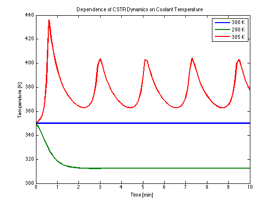
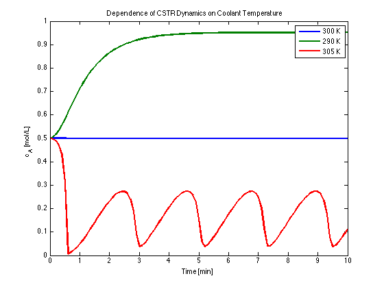

SEMD Example 2.05
Nonlinear dynamics of an exothermic continuous stirred-tank reactor (CSTR).
Contents
Nominal Operating Conditions (Table 2.3)
q = 100; % Flowrate [L/min] cAi = 1; % Inlet feed concentration [mol/L] Ti = 350; % Inlet feed temperature [K] V = 100; % Volume [L] rho = 1000; % Density [g/L] C = 0.239; % Heat capacity [J/g/K] dHr = -5e4; % Heat of reaction [J/mol] ER = 8750; % Ea/R [K] k0 = 7.2e10; % Arrhenius rate constant UA = 5e4; % Heat transfer [J/min/K] Tc = 300; % Coolant temperature [K] cA0 = 0.5; % Initial concentration [mol/L] T0 = 350; % Initial temperature [K]
Arrhenius Rate (Equation 2-63)
k = @(T) k0*exp(-ER/T);
Dynamic Mass and Energy Balances (Equations 2-66 and 2-68)
deriv = @(cA,T,Tc) [ ...
(q/V)*(cAi - cA) - k(T)*cA;
(q/V)*(Ti - T) + (-dHr/rho/C)*k(T)*cA + (UA/V/rho/C)*(Tc-T)];
Solution of the Differential Equations
% Time grid t = 0:0.1:10; % Solutions for three values of Tc s300 = ode15s(@(t,x) deriv(x(1),x(2),300),t,[cA0,T0]); s290 = ode15s(@(t,x) deriv(x(1),x(2),290),t,[cA0,T0]); s305 = ode15s(@(t,x) deriv(x(1),x(2),305),t,[cA0,T0]);
Display Solutions
figure(1);clf plot(t,deval(s300,t,2),t,deval(s290,t,2),t,deval(s305,t,2),'Linewidth',2); xlabel('Time [min]'); ylabel('Temperature [K]'); title('Dependence of CSTR Dynamics on Coolant Temperature'); legend('300 K','290 K','305 K'); figure(2);clf plot(t,deval(s300,t,1),t,deval(s290,t,1),t,deval(s305,t,1),'Linewidth',2); xlabel('Time [min]'); ylabel('c_A [mol/L]'); title('Dependence of CSTR Dynamics on Coolant Temperature'); legend('300 K','290 K','305 K'); 